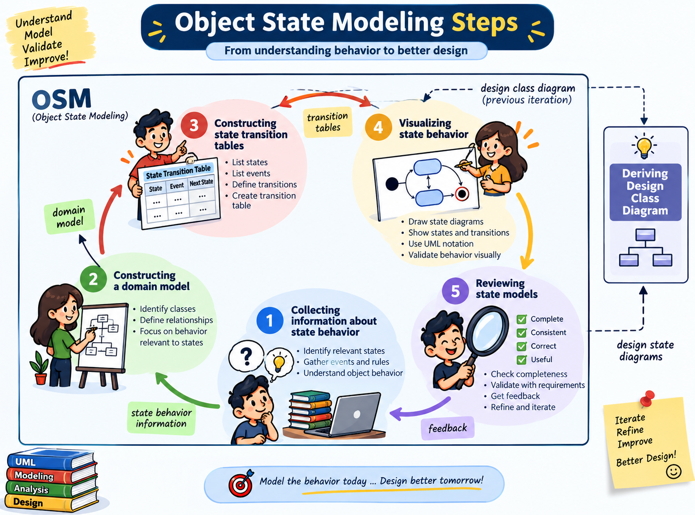

Composite States & Design Steps
Scale state machines without losing clarity, then feed discovered behavior back into the design class.
Classify behavioral information, use nested substates when needed, and derive design operations from transitions.
What to look for in requirements
- Event: something of interest happened — e.g., an application is submitted.
- State: a mode of operation — e.g., cruise control is Activated/Deactivated.
- Guard: a condition governing event processing — e.g., turn on AC if temperature is high.
- Response/action: work associated with the event — e.g., set the desired cruising speed.
Object State Modeling Steps
This visual connects the state-modeling workflow to the wider design process: collect behavior information, build the domain understanding, construct transition tables, visualize the state behavior, review it, and feed the results back into class design.

Object state modeling steps
- Select the subject object with meaningful state-dependent behavior.
- Collect events, states, guards, and responses from requirements.
- Connect states with event-triggered transitions.
- Add guards and actions only where they clarify behavior.
- Use composite/nested states when one state contains meaningful sequential substates.
- Review reachability, missing transitions, and contradictory behavior.
- Update the design class with operations implied by important transitions.
State model → class operations
For a CruiseControl subject, transition labels may reveal operations such as onOffButtonPressed(), leverDown(), leverUp(), brakeApplied(), and setDesiredSpeed().
Hide detail until it matters
A state can contain nested substates. For example, a transmission's Drive state may contain First, Second, and Third. This keeps the top-level machine readable while preserving detailed behavior.
Work closely with users, keep behavior models high-level and visual, and do only enough modeling to reduce uncertainty and guide working software.